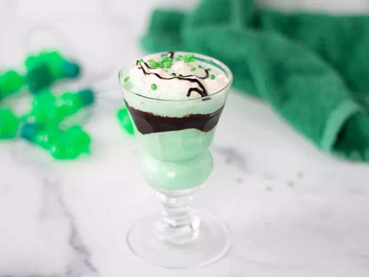

Shamrock Shake
Home

Description:
This creamy Shamrock Shake is a blend of vanilla ice cream, milk, mint extract, and green food coloring for a fun St. Patrick's Day treat.
Ingredients:
- 2 cups vanilla ice cream
- 1 ¼ cups milk
- ¼ teaspoon mint extract, or more to taste
- 9 drops green food coloring
- 2 tablespoons chocolate syrup, or to taste
- 2 tablespoons whipped cream, or to taste
- ½ teaspoon green decorator sugar, or to taste
Steps:
- Gather the ingredients.
- Blend ice cream, milk, mint extract, and food coloring together in a blender until smooth.
- Drizzle chocolate syrup around the inside of 2 tall glasses; pour shake into the glasses. Top with whipped cream and green sugar.